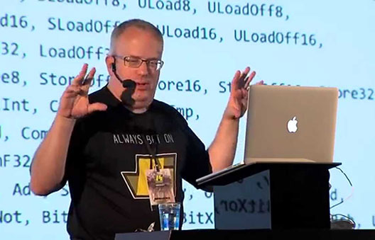
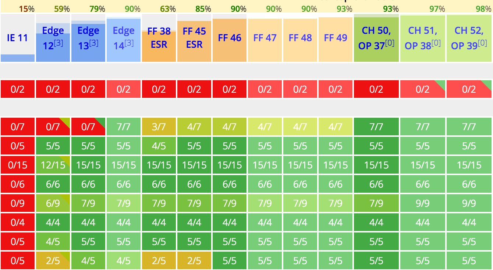
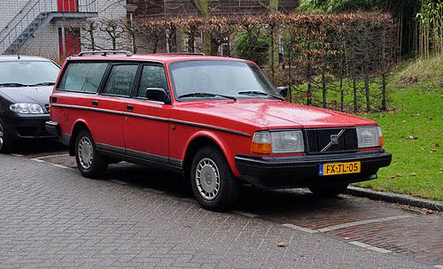

ES* 2015
Marcin Rudzki
*ECMAScript (or ES) is a trademarked scripting-language specification standardized by Ecma International in ECMA-262 and ISO/IEC 16262.
Source: en.wikipedia.org/wiki/ECMAScript
It was based on JavaScript, which now tracks ECMAScript. It is commonly used for client-side scripting on the World Wide Web.
Other implementations include JScript and ActionScript.
History of JavaScript
| Edition of ECMAScript | Release date | Comments |
|---|---|---|
|
–
1995  |
JavaScript was originally developed in 10 days in May 1995 by Brendan Eich, while he was working for Netscape Communications Corporation. | |
| Edition of ECMAScript | Release date | Comments |
|---|---|---|
| ECMA-262 Ed.1 | March 1996 | First implemented in Netscape Navigator 2.0 and Internet Explorer 3.0 |
| ECMAScript 2 | October 1998 | First implemented in Netscape Navigator 4.06 and Internet Explorer 4.0 |
| ECMAScript 3 | November 2000 | Implemented in Netscape Navigator 6.0, IE 5.5, Firefox 1.0, Chrome 1.0 and Safari 3.0 |
| Edition of ECMAScript | Release date | Comments |
|---|---|---|
| 4th Edition (abandoned) | Cancelled in 2008 | By August 2008, the ECMAScript 4th edition proposal had been scaled back into a project codenamed Harmony. |
| 5th Edition | December 2009 | implemented in IE 9.0 and all later versions and in all other desktop and mobile browsers |
| ECMAScript 5.1 | June 2011 | Minor updates. Fully aligned with 3rd edition of ISO/IEC 16262:2011 |
| Edition of ECMAScript | Release date | Comments |
|---|---|---|
|
ECMAScript 2015 (ES6) June 2015 |
6th Edition adds significant new syntax for writing complex apps,
including classes, modules, for/of loops, iterators,
Python- |
|
ES 2015 support, src: kangax.github.io/compat-table/es6
Should I switch to the new version today?
| ECMAScript 5 | ECMAScript 2015 | ||||||||
|---|---|---|---|---|---|---|---|---|---|

|
|
Do you know JavaScript?
1. What will the following instruction return?
["1", "2", "3"].map(parseInt);
- [1, 2, 3]
- ["1", "2", "3"]
- [1, NaN, NaN]
- Uncaught ReferenceError: parseInt is not defined
Do you know JavaScript?
2. What will the following instruction return?
["a", "b", "1", "2", "3"].map(parseInt).splice(2);
- [1, 2, 3]
- [1, NaN, NaN]
- ["a", NaN, NaN, NaN, NaN]
- ["a", "b", "1", "2", "3"]
The parseInt() function parses a string argument and returns an integer of the specified radix (the base in mathematical numeral systems).
/*
parseInt(string, radix);
*/
parseInt("100", 10); // 100, same as parseInt("100");
parseInt("100", 8); // 64
parseInt("100", 2); // 4
parseInt("1", 0); // 1, same as parseInt("1");
parseInt("2", 1); // NaN
parseInt("3", 2); // NaN
parseInt("2", 3); // 2
parseInt("3", 4); // 3
Do you know JavaScript?
3. What will the following instruction return?
["1", "112", "113"].map(n => +n);
- [1, 112, 113]
- ["1", "112", "113"]
- [1, NaN, NaN]
- Uncaught SyntaxError: Unexpected token =>
JavaScript app example in ECMAScript 2015
Viking Lotto is a cooperation between the national lotteries in Sweden and other scandinavian countries.
The issue is to select six numbers which can be any integer from 1 to 48, called a combination.
// returns 6 random integers from range 1-48,
// sorted ascending; example output:
// [4, 5, 7, 36, 43, 47]
[...Array(48).keys()].map(n => n + 1)
.sort(()=>0.5-Math.random())
.slice(-6).sort((a,b)=>a-b);
Do you know JavaScript?
4. What will the following instruction return?
[0, 1, 2].push(3, 4, 5);
- [0, 1, 2, 3, 4, 5]
- [0, 1, 2, [3, 4, 5]]
- [3, 4, 5]
- 6
ECMAScript 5 example
push( ) is often used to push an array to the end of an existing array. In ES5 this is often done as:
var array1 = [0, 1, 2];
var array2 = [3, 4, 5];
// Append all items from array2 onto array1
Array.prototype.push.apply(array1, array2);
array1;
ECMAScript 6 spread operator (...)
With ES6 spread you can now write the above as:
let array1 = [0, 1, 2];
let array2 = [3, 4, 5];
// Append all items from array2 onto array1
array1.push(...array2);
array1;
And Now for Something Completely Different
“java.util.Date”, Salvador Dali, oil on canvas, 1931
Source: classicprogrammerpaintings.com

Do you know JavaScript?
5. Assuming it's year 2016, what will the following return?
var today = new Date();
today.getDay(); // 5 if it's Friday (Monday is 1)
today.getMonth(); // 4 if it's May (indexing from 0)
today.getYear(); // ?
- 2016
- 16
- 116
- Uncaught TypeError: today.getYear is not a function